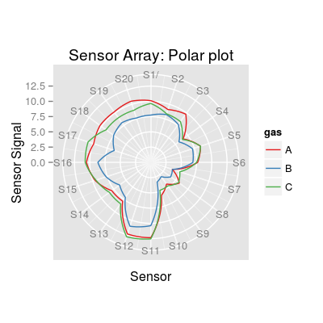
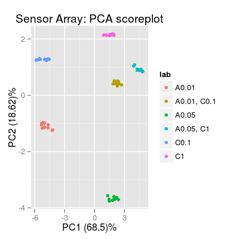

A tool to set up synthetic experiments in machine olfaction.
# concentration matrix of 3 gas classes: A, C and AC conc <- matrix(0, 60, 3) conc[1:10, 1] <- 0.01 # A0.01 conc[11:20, 3] <- 0.1 # C0.1 conc[21:30, 1] <- 0.05 # A0.05 conc[31:40, 3] <- 1 # C1 conc[41:50, 1] <- 0.01 # A0.01C0.1 conc[41:50, 3] <- 0.1 # A0.01C0.1 conc[51:60, 1] <- 0.05 # A0.05C1 conc[51:60, 3] <- 1 # A0.05C1 conc <- conc[sample(1:nrow(conc)), ] # sensor array of 20 sensors with parametrized noise parameters sa <- SensorArray(nsensors=20, csd=0.1, ssd=0.1, dsd=0.1) # get information about the array print(sa)SensorArray - enableSorption: TRUE (1) Sensor Model - num 1, 2, 3 ... 3 - beta 2 - 3 gases A, B, C - (first) data model - method: ispline (type: spline) - sensor model: coeffNonneg TRUE -- coefficients (first): 3.1705, 3.6297, 5.0051 ... 4.4129 (2) Sorption Model - knum 1, 2, 3 ... 3 - 3 gases A, B, C (3) Concentration Noise Model - 3 gases A, B, C - csd: 0.1 - noise type: logconc - log-factor: 1, 1, 2 (4) Sensor Noise Model - num 1, 2, 3 ... 3 - 3 gases A, B, C - ssd: 0.1 - noise type: randomWalk - noise-factor: 1, 1, 1, 1, 1, 1, 1, 1, 1 (5) Drift Noise Model - num 1, 2, 3 ... 3 drift common model - method: cpc - ndcomp: 1plot(sa)
# generate the data sdata <- predict(sa, conc) # plot the data plot(sa, "prediction", conc=conc, sdata=sdata, leg="top")